Ausgabe vom 28. August 2026
Alle Meldungen
Netz & Technik
Tarife & Angebote
 Telefónica-Tochter O2 startet 5-Euro-Tarif und mehr
Telefónica-Tochter O2 startet 5-Euro-Tarif und mehr
 Apple kündigt iPhone-Event am 9. September an
Apple kündigt iPhone-Event am 9. September an
 Telekom-Tarife mit bis zu 820 Euro Cashback
Telekom-Tarife mit bis zu 820 Euro Cashback
Satellit & Direct-to-Cell
 Starlink testet Maritim-Tarif für kleine Boote
Starlink testet Maritim-Tarif für kleine Boote
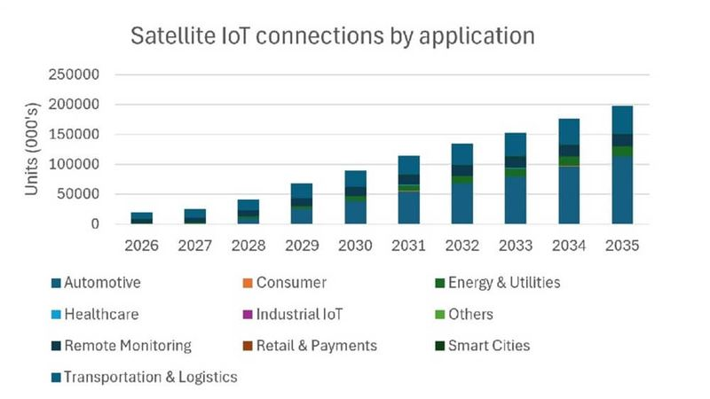
Satelliten-IoT wächst auf fast 198 Millionen VerbindungenRegulierung & Politik
Geld & Übernahmen
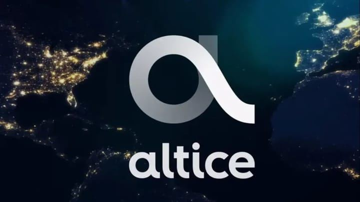
Altice France kappt Investitionen nach Kunden- und Ergebnisschwund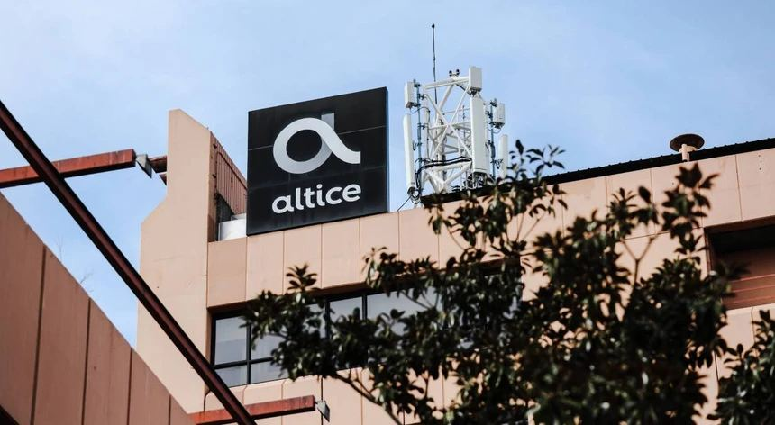
Altice kürzt Investitionen vor SFR-Verkauf um 33,4 ProzentPartnerschaften
Vermischtes
Netz & Technik
29 Meldungen
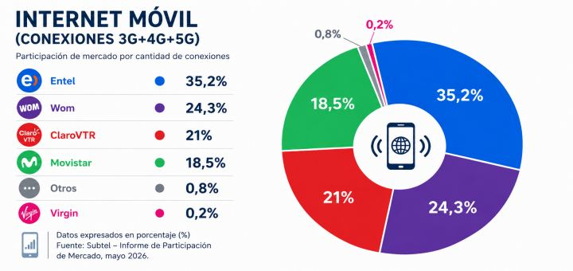
Chile: 5G steht kurz vor 4G-Ablösung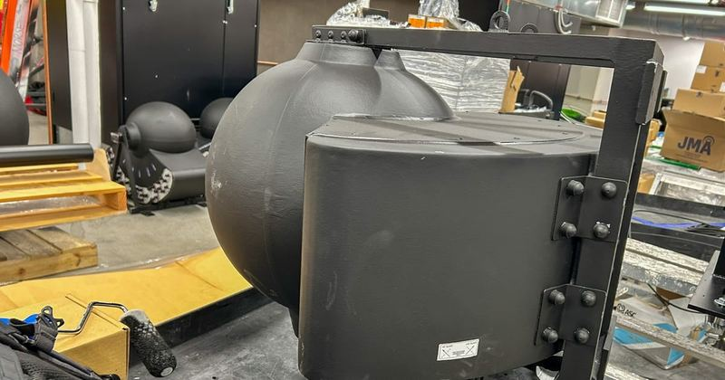
Linsen-Antennen fordern Ericsson und Nokia herausAuch berichtet von TeleSíntese (BR), TELETIME (Brasilien)
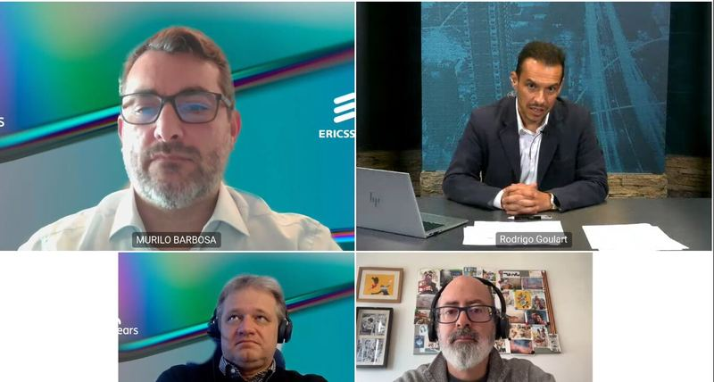
Ericsson testet neue Antennen bis Anfang 2027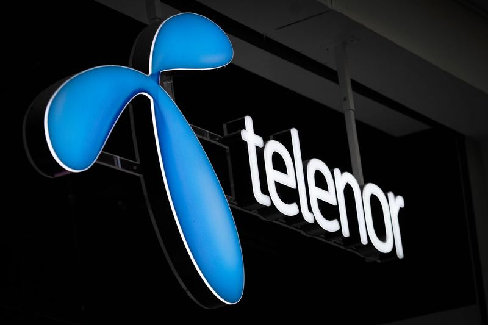
Telenor blockt täglich 7,7 Millionen digitale Kriminalitätsversuche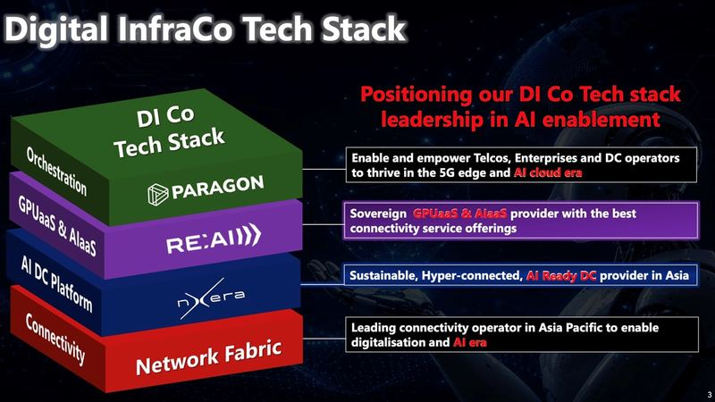
Singtel investiert langfristig in KI-Software und Rechenzentren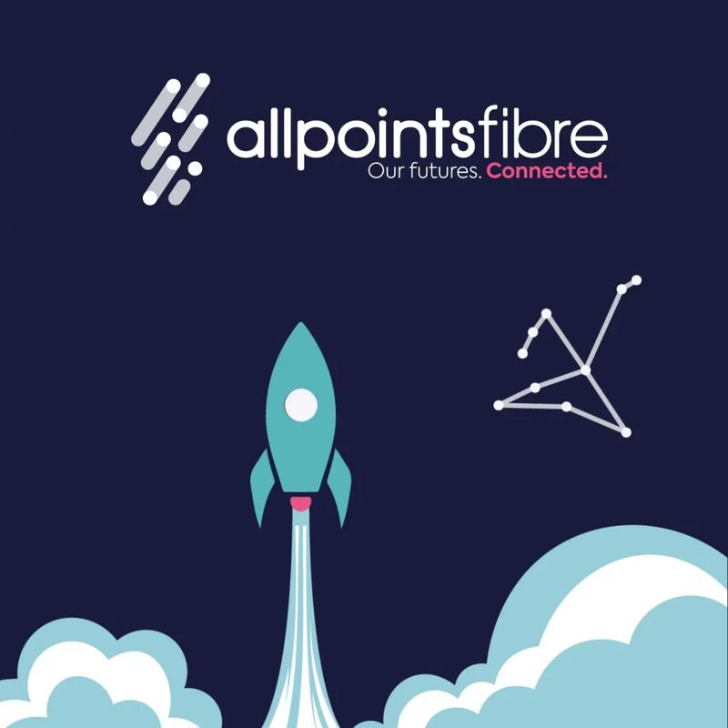
APFN bringt SoGEA-Breitband für britische ISPs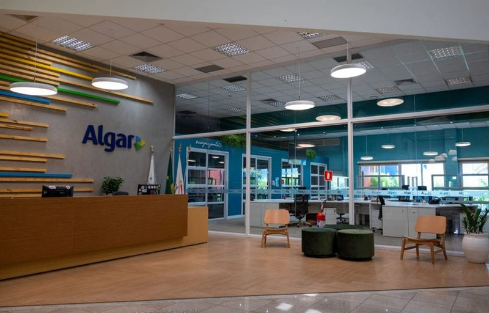
Algar bringt Cloud Plus nach Süden und Nordosten
Tarife & Angebote
30 Meldungen
O2 (Telefónica) · 2026-08-28
Telefónica-Tochter O2 startet 5-Euro-Tarif und mehr
O2 Spanien hat 2026 einen 5-Euro-Mobiltarif mit 15 Gigabyte (GB) und unbegrenzten Anrufen und SMS gestartet, Disney+ in vier Tarife aufgenommen, neue WLAN-Router ausgerollt und Cloud-Speicher von 1 Terabyte (TB) auf 10 Terabyte (TB) erhöht. Zwei Netflix-Kombi-Tarife wurden im August um 2 Euro teurer.
Was das für uns heißt5-Euro-Tarif mit 15 GB im spanischen Markt drückt die Einstiegsschwelle, an der wir unsere Zweitmarken-Tarife messen müssen.
 Disney+ startet Gratis-Plan ohne 4K und Downloads
Disney+ startet Gratis-Plan ohne 4K und Downloads
Was das für uns heißtKostenlose Disney+-Stufe könnte den Wert unserer TV-Bundles drücken – wir sollten eigene Streaming-Optionen und Bundle-Preise prüfen.
 Netia bündelt Internet, TV und Prime für 35 Zloty
Netia bündelt Internet, TV und Prime für 35 Zloty
Was das für uns heißtNetias Internet-TV-Prime-Bundle für 35 Zloty monatlich macht eine Überprüfung eigener Streaming-Einstiegsbundles am Preisrand sehr wahrscheinlich nötig.
Was das für uns heißtBis zu 500 Euro Ankaufprämie bei MediaMarkt setzen die Benchmark für eigene Foldable-Eintauschaktionen in Vodafone-Shops.
 Free Mobile lockt mit Smartphones für 1 Euro
Free Mobile lockt mit Smartphones für 1 Euro
Was das für uns heißtFree startet Geräte für 1 Euro – Vodafone sollte prüfen, ob ein ähnliches 1-Euro-Bundle den Geräteabsatz im Schulanfang hebt.
Was das für uns heißtEin Cloud-Gaming-Abo mit Spielzugabe lässt sich als Zubuch-Option für unsere Glasfaser- und 5G-Tarife testen.
Was das für uns heißtDiscounter verschiebt Preispunkte - eigene Einstiegsangebote auf 15-GB- und 264-Euro-Niveau prüfen.
Auch berichtet von Telepolis (Polen)
Was das für uns heißtGalaxy A27 5G für 1199 Złoty in Polen – Preispunkt für unsere 5G-Einsteiger-Aktionen vergleichen.
Was das für uns heißtOutdoor-WLAN als Buendel-Option koennte unser Home-Broadband um einen 'Garten'-Baustein ergaenzen – erst Nachfrage und Preispunkt pruefen.
Was das für uns heißteSIM wird zum Standard-Einstieg – Vodafone könnte den eSIM-Wechsel mit einer ähnlichen Freimonat-Aktion verknüpfen.
Was das für uns heißtFairphone 6+ ist im deutschen Handel – wir sollten prüfen, ob nachhaltige Geräte unser Portfolio differenzieren können.
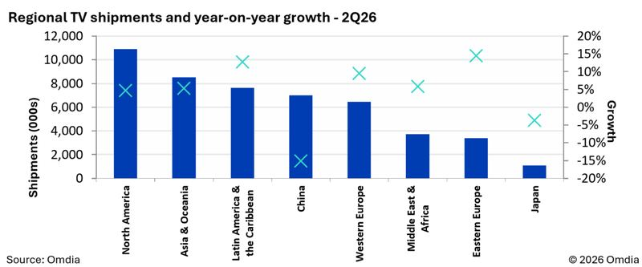
Globale TV-Auslieferungen wachsen um 3,6 Prozent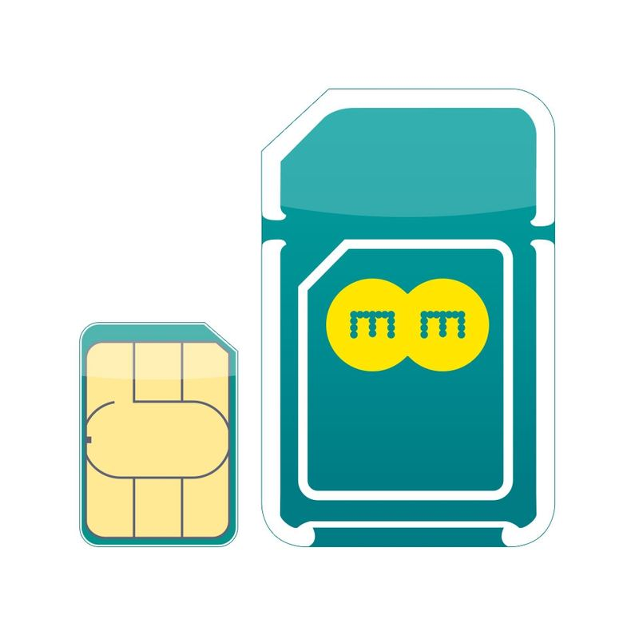
EE UK erlässt Gespräche und Daten nach Nepal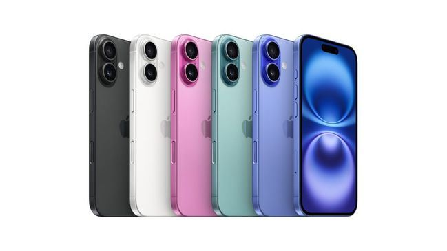
Apple und Samsung dominieren Smartphone-Verkauf
Satellit & Direct-to-Cell
4 Meldungen
Starlink (SpaceX) · 2026-08-28
Starlink testet Maritim-Tarif für kleine Boote
Starlink testet einen persönlichen Maritim-Tarif für kleine Bootsbesitzer: 185 US-Dollar/Monat (rund 136 Britische Pfund) für unbegrenzte Daten in Küstengewässern, ab 12 Seemeilen Ocean Mode für 6 US-Dollar je Gigabyte und ohne 30-Tage-Roaming-Limit.
Was das für uns heißt185 Dollar/Monat und 6 Dollar je Gigabyte setzen eine Preisuntergrenze für Seekonnektivität - prüfen, ob Vodafone eigene Maritim- oder Satellitenoptionen nachschärfen sollte.
Regulierung & Politik
19 Meldungen
Auch berichtet von PolicyTracker, PolicyTracker
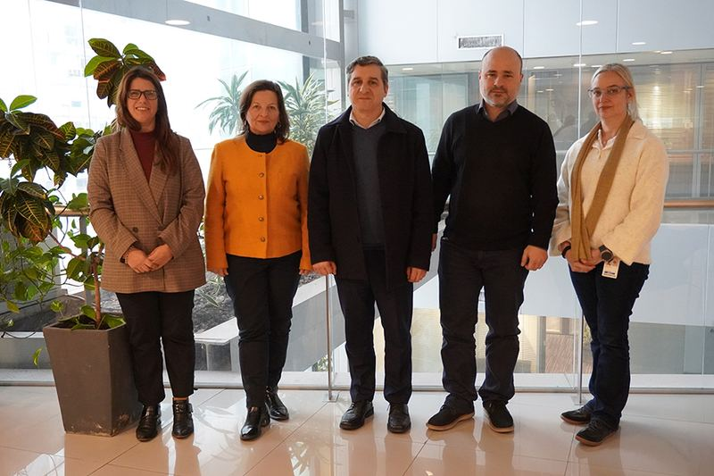
Uruguay startet mobile Nutzung des elektronischen Personalausweises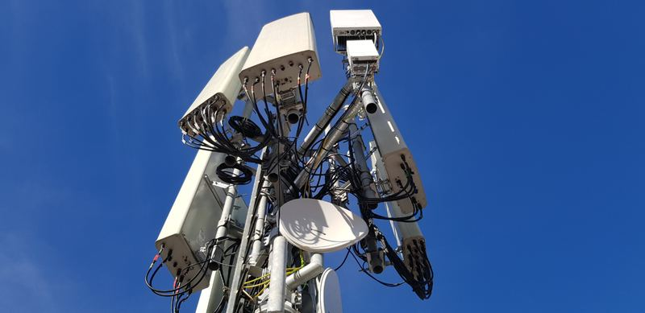
Italien startet Vergabe für 26-Gigahertz-Band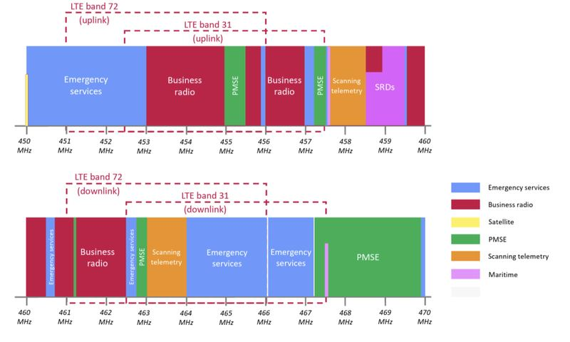
Ofcom konsultiert zusätzliche Funkfrequenzen für Drohnen
Geld & Übernahmen
10 Meldungen
Auch berichtet von Mobile World Live
Partnerschaften
6 Meldungen
Frühere Ausgaben
28. August 2026
439 neue Meldungen
27. August 2026
1046 neue Meldungen
26. August 2026
967 neue Meldungen
25. August 2026
866 neue Meldungen
21. August 2026
663 neue Meldungen
19. August 2026
926 neue Meldungen
17. August 2026
897 neue Meldungen
15. August 2026
810 neue Meldungen
14. August 2026
944 neue Meldungen
8. August 2026
256 neue Meldungen
7. August 2026
381 neue Meldungen
6. August 2026
642 neue Meldungen
5. August 2026
426 neue Meldungen
4. August 2026
124 neue Meldungen
31. Juli 2026
220 neue Meldungen
28. Juli 2026
9 neue Meldungen
27. Juli 2026
49 neue Meldungen
26. Juli 2026
4 neue Meldungen
25. Juli 2026
11 neue Meldungen
21. Juli 2026
185 neue Meldungen
20. Juli 2026
27 neue Meldungen
19. Juli 2026
233 neue Meldungen
17. Juli 2026
257 neue Meldungen
16. Juli 2026
1991 neue Meldungen